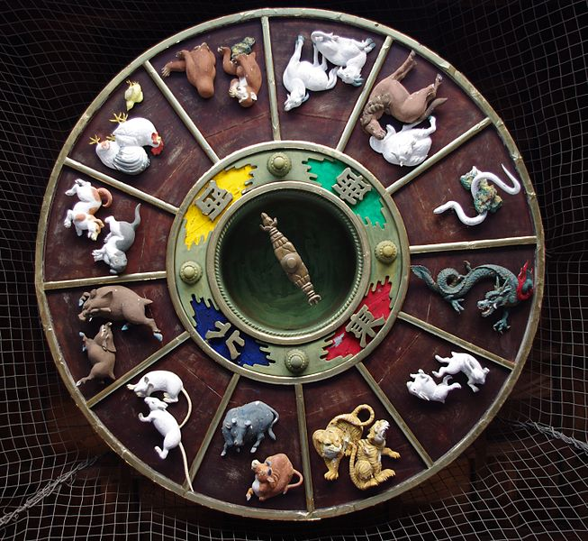

Semnificația coloanelor destinului
Pentru a înțelege harta Coloanelor Destinului, trebuie să începi cu rândul de sus. Acesta este cunoscut sub denumirea de Tulpinile Cerului și reprezintă oportunitățile și Destinul ceresc. Ea constă din unul din cele 5 elemente, combinat cu polaritatea sa (Yin sau Yang). Tulpinile Cerului întotdeauna arată ce se întâmplă în plan exterior, la suprafață, sunt circumstanțele pe care un individ le găsește in personalitatea sa. Sunt 10 Tulpini Cerești, și anume 2 seturi ale elemetelor chinezești (Metal, Apă, Lemn, Foc și Pământ), fiecare cu o polaritate masculină și feminină.
După Tulpinile Cerului, linia 2 arată Ramurile Pământului. Acestea sunt arătate de animalele zodiacului chinezesc, plus combinația particulară a elementului. Te poți gândi la cele 10 Tulpini Cerești ca frunze ale unui copac, iar cele 12 Ramuri Pământești ca rădăcini care hrănesc aceste frunze. Tulpinile sunt externe, vizibile, iar rădăcinile sunt interne, și în cea mai mare parte sunt invizibile. Efectul Ramurilor este considerat întotdeauna mai puternic decât al Tulpinii. Fiecare din cele 4 coloane constă dintr-o tulpină în partea de sus, cu o ramură în partea de jos. Harta celor Patru Coloane arată echilibrul dintre tulpină și ramură în fiecare coloană, și modul în care interacționează coloanele între ele și cu factorii externi.
În harta Coloanelor Destinului, totul este despre echilibrul elementelor. Prea multe sau prea puține dintr-un element particular face ca acel element să nu fie echilibrat. Ideea este să obții echilibrul, dacă ai prea multe dintr-un anumit element va trebui să-l diminuezi, dacă ai prea puține, va trebui să găsești mijloace prentru a crea sau suplimenta acel element.
Dacă ești născut la momentul potrivit al anului pentru energia ta specifică (Qi), atunci viața va fi in general mai lină. Dacă te-ai născut la un moment nepotrivit, atunci viața poate fi o luptă, cu mult stres și poți suferi mai mult din cauza bolilor. Dacă acesta este cazul tău, atunci astrologia chinezească îți poate arăta cum să depășești aceste dificultăți.
Reprezentarea coloanelor destinului
 Citind de la stânga la dreapta, cele patru coloane reprezintă diferite aspecte ale vieții tale (pe site se calculează 2 coloane suplimentare, Concepția și Viața).
Coloana Orei
Coloana Orei se numește Palatul Copiilor. Aici poți vedea relația dintre tine și copiii tăi. Îți spune și despre batrânețe, frați și surori, iubiți, creativitate, sex..
Coloana Zilei
Coloana Zilei este cea mai importantă coloană dintre cele patru. Partea de sus (aflat în primul rând) se numește Stăpânul Zilei. El este în legătură cu Ziua ta de naștere și are corespondență cu mișcarea Soarelui. Acesta ești tu și reprezintă spiritul tău (sinele interior). De exemplu, Stăpânul Zilei în harta mea este Focul Yin (-Foc). Cum Stăpânul Zilei spune că sunt o persoană de foc, interpretarea tradițională ar fi ceva de genul "Ești entuziast, plin de acțiune, dinamic, cu capacitatea de a impulsiona pe alții, de a fructifica ideile tale etc". În funcție de luna în care cineva este născut (anotimp) Stapânul Zilei poate fi definit de obicei ca puternic sau slab. Asta nu are de-a face cu puterea sau slăbiciunea caracterului persoanei.
În anumite luni (anotimpuri) unele elemente pot fi puternice și altele slabe. De obicei ce este slab în hartă este de dorit și ce este puternic este mai puțin de dorit. Un Stăpân al Zilei puternic nu are nevoie de ajutor extern și de multă grijă. De fapt, prea multă grijă și suport îi dăunează, îl slăbește, îl face leneș, și nu își mai realizează potențialul. El este întărit de adversitate și obstacole, și funcționează bine în timpuri grele. Un Stăpân al Zilei slab, pe de altă parte, nu se descurcă în stările conflictuale și are nevoie de suport și încurajare. Lui îî lipsește puterea elementului și are nevoie să o ia de la prieteni, părinți, și în general dintr-un mediu suportiv. Celor ce au un Stăpân al Zilei slab nu trebuie să le fie rușine să caute și să accepte ajutorul, deoarece acesta este ceva natural pentru ei.
Când vorbim despre anotimpuri nu este vorba de climatul local ci despre o energie universală. Când se spune că cineva este născut în anotimpul de vară înseamnă că este născut intr-o lună când energia universală a focului și pământului a fost puternică, indiferent de locul nașterii în lume. Partea de jos este Palatul Căsătoriei. Ea îți spune despre calitatea căsătoriei.
Coloana Lunii
Coloana Lunii se numește Palatul Părinților. Aici poți vedea relția dintre tine și părinții tăi. Aici poți citi și despre copilăria ta și este o indicație a tipului de familie în care ai crescut. Arată și relația cu colegii și talentul în afaceri.
Coloana Anului
Coloana Anului se numește Palatul Bunicilor. Aici poți vedea relația dintre tine și bunicii tăi. Reprezintă și trecutul familiei și modul în care ești privit de societate. Arată impacturi subtile în planul acumulărilor personale.